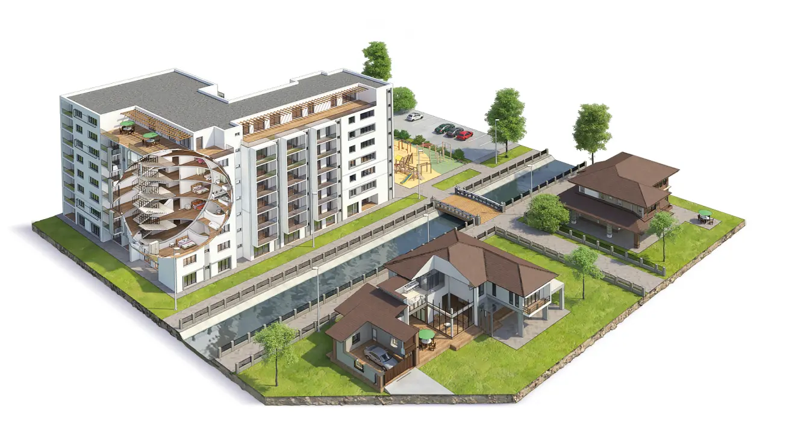
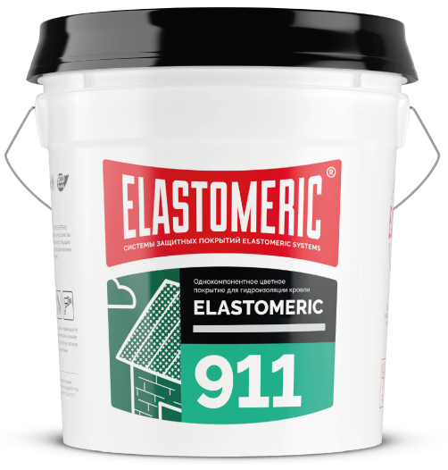

РЕМОНТ И ГИДРОИЗОЛЯЦИЯ КРОВЛИ
ПОЛИМЕРНЫМИ МАСТИКАМИ
ДАЧНОГО ДОМА


Для монтажа гидроизоляции кровли с помощью мастик не нужна специальная подготовка, достаточно следовать инструкции. Вы сможете выполнить ремонт крыши дачного дома своими руками.
ПОДРОБНЕЕ
Обновление кровли даже на небольшом дачном домике – это хлопотное и затратное мероприятие. Придется заплатить за новый материал и работу кровельщиков, на некоторое время смириться с присутствием чужих людей на участке, утилизировать старый шифер или железо, убрать мусор после окончания работ. Этих неудобств можно избежать, отремонтировав крышу своими руками.
Составы
ELASTOMERIC 911 и
REZINKA подходят для точечной гидроизоляции кровли, а также используются для полного обновления покрытия. Мастики наносятся кистью, валиком или с помощью аппарата безвоздушного распыления, как обычные краски. Перед началом работ достаточно очистить от грязи с помощью щетки или мойки высокого давления, удалять старое покрытие не нужно. Если металл сильно поржавел, можно использовать фирменный грунт ELASTOMERIC 011.
С ПОМОЩЬЮ ПОЛИМЕРНЫХ МАСТИК МОЖНО УСТРАНИТЬ БОЛЬШИНСТВО ДЕФЕКТОВ, КОТОРЫЕ ПРИВОДЯТ К ПОЯВЛЕНИЮ ПРОТЕЧЕК ИЛИ ПОРТЯТ ВНЕШНИЙ ВИД ВАШЕЙ ДАЧИ.
НЕТ НАГРУЗКИ НА КОНСТРУКЦИЮ ЗДАНИЯ
УСТОЙЧИВОСТЬ К ТЕМПЕРАТУРНЫМ ПЕРЕПАДАМ
ВЫСОКИЙ УРОВЕНЬ АДГЕЗИИ К ЛЮБОЙ ПОВЕРХНОСТИ
УСТОЙЧИВОСТЬ К УЛЬТРАФИОЛЕТУ
ЭЛАСТИЧНОЕ ПОЛИМЕРНОЕ ПОКРЫТИЕ
Чтобы устранить протечки в проблемных местах, мы рекомендуем применять акриловые мастики в комплексе с армирующей тканью
ELASTOMERIC Fabric. Это нетканое полотно перекроет подвижные трещины, швы, отверстия, сложные примыкания и продлит срок службы гидроизоляции.
ОБРАЗУЕТСЯ ВОДОНЕПРОНИЦАЕМАЯ РЕЗИНОПОДОБНАЯ МЕМБРАНА
ЭКОНОМНЫЙ РАСХОД
БОЛЬШОЙ ВЫБОР ЦВЕТА
СОПРОТИВЛЕНИЕ ОБРАЗОВАНИЮ ГРИБКА И ПЛЕСЕНИ
ЭКОНОМНЫЙ РАСХОД
БОЛЬШОЙ ВЫБОР ЦВЕТА
АЛЬТЕРНАТИВА ДЕМОНТАЖУ И ЗАМЕНЕ КРОВЛИ
КУПИТЬ